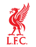

23:00МСК
Челси
П12.21
X3.75
П22.75
ПрогнозП1 (основное время)
Кэф2.21
Уверенность
ОжидаетсяСтатистика матча
Форма: Ливерпуль
ПВВВВ
Форма: Челси
ВВП
Не сыграют: Ливерпуль
Брэдли, Экитике, Фримпонг, Леони — травмы; под вопросом Муньос, Собослаи, Вирц
Не сыграют: Челси
Палмер — дисквалификация; Мартинес, Джеймс, Гиттенс, Эмегха — травмы; под вопросом Жоау Педру, Чаварриа
Форма — последние матчи, самый свежий справа. В — победа, Н — ничья, П — поражение.
Разбор матча
Ливерпуль выиграл четыре официальных матча подряд, Челси приезжает без дисквалифицированного Палмера.
У Челси также травмированы Джеймс и Гиттенс, под вопросом Жоау Педру. У Ливерпуля нет Экитике и Фримпонга, но дома на Энфилде команда в лучшей форме сезона. Кубковый матч допускает ротацию с обеих сторон, поэтому уверенность низкая.
Прогноз — оценка вероятности исхода, а не гарантия результата.